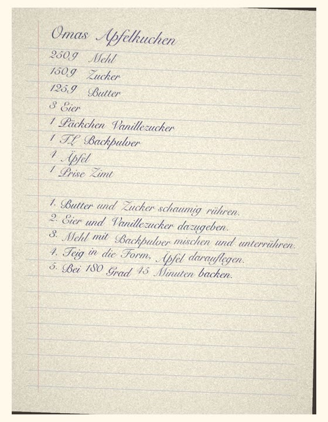
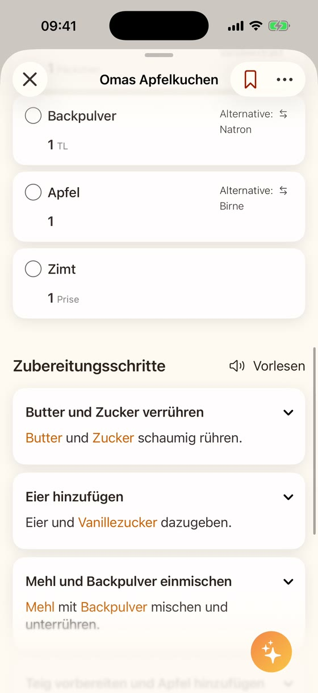
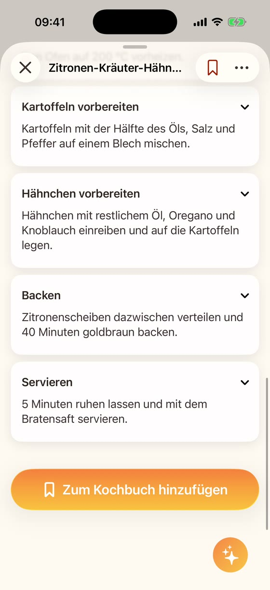

Dein Rezeptbuch in einer App
Omas Karten, Familienlieblinge und deine Änderungen, auf dem iPhone.
Omas Karte, das Curry, an dem du seit Jahren feilst, der Kuchen, nach dem an jedem Geburtstag alle fragen: Sie gehören in ein Rezeptbuch auf deinem iPhone. Pass jedes Rezept so an, wie du es kochst, und gib es als PDF weiter.



Bild 2 und 3 sind echte Screens aus der App. Die Karte ist ein Beispiel, das wir zum Testen erstellt haben: ein digitales Bild in einer Handschrift-Schriftart, kein Foto von echtem Papier. Echte Handschrift ist schwerer zu lesen als diese.
Rezepte, die weitergegeben werden
Manche Rezepte gibt es nur auf einer einzigen Karte oder im Kopf einer Tante. Frag danach, fotografier die Karten in ReciPics und halte sie in deinem Rezeptbuch fest, samt der Änderungen, die bei euch üblich sind.
So aufgeschrieben, wie du kochst
In dein Rezeptbuch kommen die Gerichte, die du wirklich kochst, und zwar so, wie du sie kochst: weniger Zucker, das grössere Blech, zehn Minuten länger im Ofen. Ändere Zutaten, Mengen und Schritte, bis das Rezept nach dir klingt. Deine Rezepte liegen in Kategorien wie Frühstück, Abendessen und Dessert; über das Menü eines Rezepts schiebst du es in eine andere.
Aufbewahrt und weitergegeben
Teile ein Rezept als PDF oder Text mit der Familie, dann ist die Karte nicht mehr das einzige Exemplar. Lesen kann man es auch ohne die App. Ein Rezept pro PDF; ein gedrucktes Buch gibt es nicht.
ReciPics liest Karten, Seiten und Links mit KI, und KI kann sich irren. Vergleich deshalb ein Rezept vor dem Kochen mit der Vorlage, vor allem Mengen und Temperaturen, und prüf Zutaten bei Allergien oder Unverträglichkeiten selbst.
Du suchst einen Ort für alle Rezepte, die du speicherst, nicht nur für die der Familie? Dein digitales Kochbuch auf dem iPhone · Rezepte sammeln in einer App
Ein Rezept auf Papier für die Küche? Rezeptkarte erstellen und drucken.
Mehr: Handgeschriebene Rezepte digitalisieren · Rezepte aus dem Kochbuch scannen · Rezepte von Websites speichern
Foto-Scans zählen zum KI-Kontingent der App, das ohne Premium begrenzt ist. Für neue Nutzer ohne bezahltes Paket ist die Zahl der Link-Importe pro Monat begrenzt. Die App zeigt dir, wie viele noch übrig sind.
Um ein Rezept zu lesen, werden das Foto und der auf deinem iPhone erkannte Text oder der Link an unsere Server und Dienstleister gesendet, darunter OpenAI (USA); siehe Datenschutz.
Rezepte aus Kochbüchern, von Websites und aus sozialen Medien sind in der Regel urheberrechtlich geschützt. Nutze ReciPics nur für dein privates Rezeptbuch und gib Rezepte, die du nicht weitergeben darfst, nicht weiter. ReciPics ist nicht mit Instagram, Meta oder TikTok verbunden und wird von ihnen weder unterstützt noch gesponsert.
ReciPics im App Store ladenFür iPhone mit iOS 26 oder neuer.
Häufige Fragen
Kann ich mit ReciPics ein Familienrezeptbuch anlegen?
Ja, auf deinem iPhone. Fotografier die handgeschriebenen Karten der Familie, gleich die Mengen mit der jeweiligen Karte ab und teile Rezepte als PDF oder Text mit Verwandten.
Liest ReciPics handgeschriebene Familienrezepte?
Ja, vom Foto. ReciPics macht aus der Karte ein Rezept, das du bearbeiten kannst. Handschrift ist schwerer zu lesen als Druckschrift, gleich die Mengen also mit der Karte ab, denn KI kann sich verlesen.
Kann ich ein Rezept nachträglich ändern?
Ja. Bearbeite Zutaten, Mengen und Schritte, zum Beispiel wenn dein Ofen zehn Minuten länger braucht.